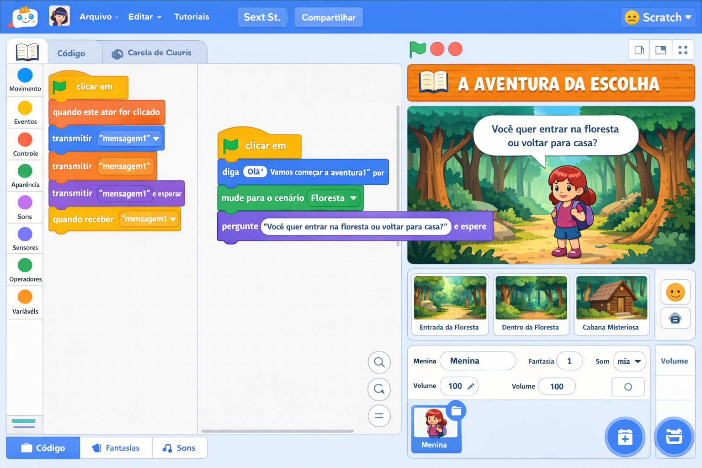
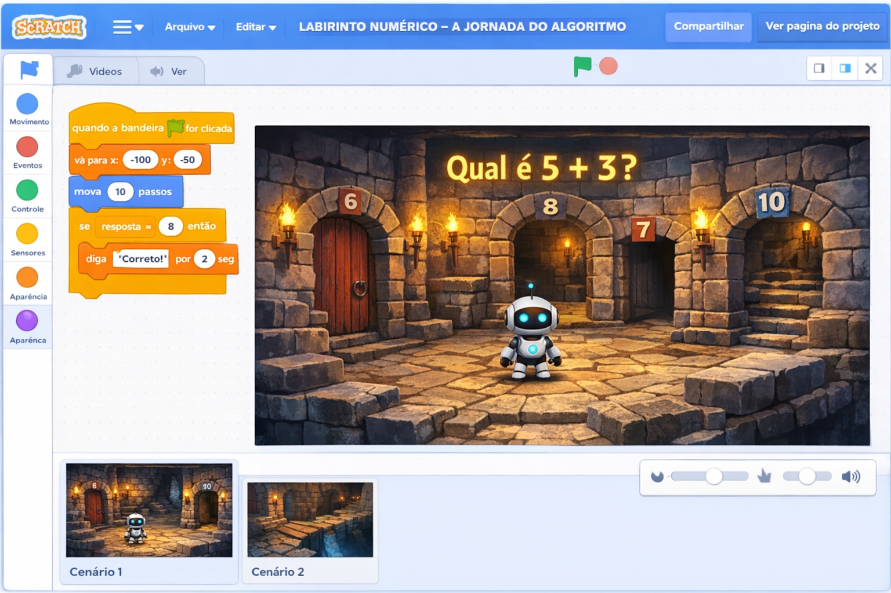
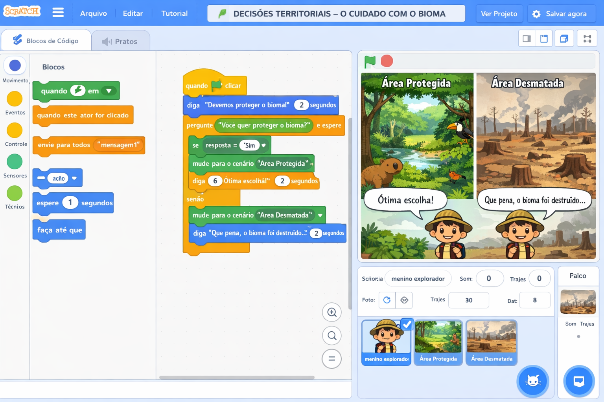
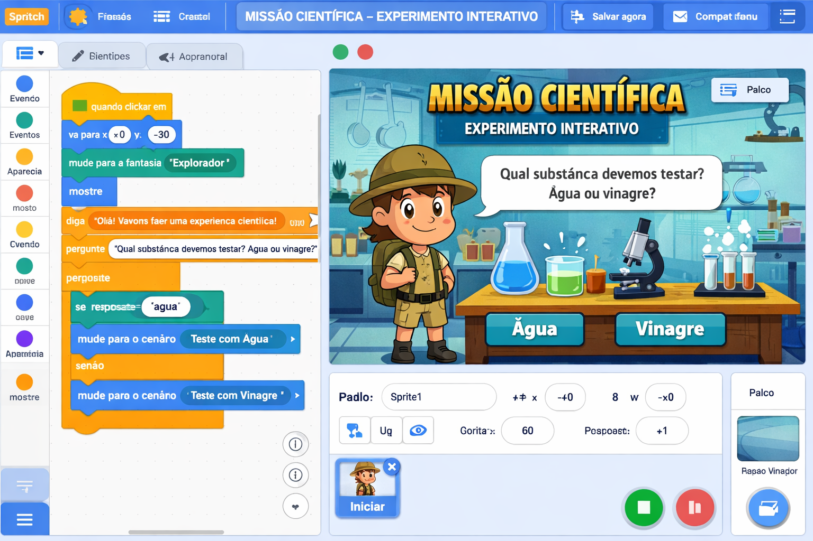

Projetos Didáticos - 6º Ano
Narrativas Interativas: a arte de contar histórias com código
🎮 PROJETO 6º ANO: "A AVENTURA DA ESCOLHA"
Descrição do Projeto
Os alunos criarão uma história interativa onde o usuário toma decisões que afetam o desenrolar da narrativa. O projeto explora sequências, eventos, sincronização de diálogos e o uso de múltiplos cenários. Ao final, a história deve ter pelo menos três finais diferentes.

Objetivos de Aprendizagem
- Cognitivos: Desenvolver estrutura narrativa (início, meio, fim), compreender relações de causa e consequência, expressar ideias através de personagens e cenários.
- Técnicos: Utilizar blocos de eventos (
quando ⚑ for clicado,quando este sprite for clicado), blocos de aparência (diga,mude para o cenário), blocos de controle (espere,se-então) e o blocopergunte e espere. - Socioemocionais: Trabalhar em equipe, planejar em conjunto, respeitar as escolhas do usuário e avaliar as consequências das decisões.
📚 Alinhamento com a BNCC e DCE-PR
- EF67LP19 – Planejar e produzir textos digitais (histórias interativas) considerando recursos hipermidiáticos.
- EF69LP46 – Utilizar ferramentas de produção digital (Scratch) para criar narrativas com múltiplas possibilidades.
- EF69LP47 – Analisar e construir textos com escolhas que levem o leitor a diferentes caminhos.
- Competência Geral 5 – Cultura Digital: compreender, usar e criar tecnologias digitais de forma crítica e significativa.
Passo a Passo do Projeto
Fase 1: Planejamento da História (1 aula de 50 min)
Atividade: Os alunos, em duplas ou trios, devem planejar a história usando um storyboard. O professor fornece um modelo:
Storyboard - "A Floresta Misteriosa"
Cena 1: Personagem principal (uma menina) está na entrada da floresta.
➡️ Escolha: (1) Entrar na floresta / (2) Voltar para casa
Cena 2 (escolha 1): Dentro da floresta, encontra um animal falante.
➡️ Escolha: (1) Seguir o animal / (2) Ignorar
Cena 3 (escolha 1.1): O animal leva a um tesouro → Final feliz.
Cena 3 (escolha 1.2): Se perde e encontra uma cabana → Final surpresa.
Cena 2 (escolha 2): Volta para casa → Final neutro.
Os alunos devem desenhar os cenários, listar os sprites (personagens) e escrever os diálogos para cada escolha.
Fase 2: Implementação no Scratch (2 aulas)
Preparação: Adicionar os sprites (personagens) e os cenários conforme o storyboard.
Código da Cena Inicial (Sprite Principal):
mude para o cenário [cena_inicial]
mostre
diga [Você está na entrada da Floresta Misteriosa. O que deseja fazer?] por 4 segundos
pergunte [1 - Entrar na floresta 2 - Voltar para casa] e espere
se <(resposta) = [1]> então
transmita [entrar_floresta]
senão
transmita [voltar_casa]
Sprite do Cenário (quando a escolha é feita):
mude para o cenário [dentro_floresta]
diga [Você adentra a floresta e avista um animal falante!] por 3 segundos
pergunte [1 - Seguir o animal 2 - Ignorar] e espere
se <(resposta) = [1]> então
transmita [seguir_animal]
senão
transmita [ignorar_animal]
Finais Alternativos:
mude para o cenário [tesouro]
diga [O animal te leva até um baú cheio de ouro! Parabéns, você encontrou o tesouro!] por 5 segundos
toque o som [cheer]
pare [todos]
quando eu receber [ignorar_animal]
mude para o cenário [perdido]
diga [Você se perde e encontra uma cabana assombrada...] por 4 segundos
toque o som [scream]
diga [Fim da aventura!] por 3 segundos
pare [todos]
quando eu receber [voltar_casa]
mude para o cenário [casa]
diga [Você decide voltar para casa. Que pena! Talvez outro dia você tenha coragem...] por 5 segundos
toque o som [crickets]
pare [todos]
Fase 3: Teste e Refinamento (1 aula)
Os alunos devem testar seus projetos com colegas e ajustar os tempos, os diálogos e corrigir possíveis erros (debug). O professor circula pela sala oferecendo suporte e incentivando a criatividade.
Rubrica de Avaliação
- ✅ Planejamento (2 pontos): Storyboard completo com início, meio e fim; pelo menos três finais diferentes.
- ✅ Funcionalidade (3 pontos): Projeto executa sem erros; todas as escolhas funcionam corretamente.
- ✅ Código (3 pontos): Uso adequado de blocos de eventos, condicionais e transmissões; código organizado e comentado.
- ✅ Criatividade (2 pontos): Personagens e cenários originais; diálogos envolventes; elementos surpresa.
Extensões e Desafios
- Adicionar pontuação: Crie uma variável "pontuação" que aumenta conforme o usuário faz boas escolhas.
- Usar o bloco de tempo: Inclua um cronômetro para que o jogador tenha um tempo limite para tomar decisões.
- Incluir sons ambientes: Sons de floresta, suspense, etc., para tornar a experiência mais imersiva.
- Transformar em jogo de tabuleiro: Em grupo, criar uma versão analógica com cartas e dados.
📐 PROJETO 6º ANO: "LABIRINTO NUMÉRICO – A JORNADA DO ALGORITMO"
Descrição do Projeto
Os alunos criarão um jogo interativo de labirinto onde o usuário precisa resolver desafios matemáticos (operações, sequências ou lógica) para avançar. Cada porta ou encruzilhada exige a resposta correta para prosseguir. O projeto trabalha raciocínio abstrato, representação de algoritmos e uso de operadores aritméticos e lógicos no Scratch.

Objetivos de Aprendizagem
- Cognitivos: Desenvolver pensamento computacional por meio da formalização de sequências e condicionais; aplicar conceitos matemáticos (adição, subtração, multiplicação, divisão, múltiplos, divisores) em situações-problema.
- Técnicos: Utilizar blocos de operadores (
+,-,*,/,>,<,=), variáveis,se-então-senão,pergunte e esperee eventos de transmissão para navegação no labirinto. - Socioemocionais: Persistência na resolução de problemas, colaboração para criar desafios equilibrados e responsabilidade ao testar cenários com diferentes níveis de dificuldade.
📚 Alinhamento com a BNCC e DCE-PR
- EF06MA05 – Resolver e elaborar problemas que envolvam as ideias de múltiplo e divisor.
- EF06MA07 – Compreender e utilizar a relação entre divisibilidade e os conceitos de múltiplo e divisor.
- EF06MA28 – Interpretar e construir fluxogramas e algoritmos para resolver problemas matemáticos.
- Competência Geral 4 – Utilizar conhecimentos matemáticos para compreender e atuar no mundo.
Passo a Passo do Projeto
Fase 1: Planejamento do Labirinto e Desafios (1 aula)
Atividade: Em duplas, os alunos esboçam o labirinto (mínimo 3 salas/encruzilhadas) e definem os desafios matemáticos para cada transição. O professor fornece um modelo:
Storyboard - "Labirinto do Minotauro Matemático"
Sala 1: Entrada do labirinto. O guardião pergunta: "Qual o resultado de 12 × 7?"
➡️ Resposta correta: abre porta para Sala 2 / Errada: volta ao início.
Sala 2: Encruzilhada com três caminhos. Desafio: "O número 36 é divisível por quantos números? Digite a quantidade."
➡️ Acerto: abre caminho para Sala 3 / Erro: perde uma vida ou volta.
Sala 3: Desafio final: "Complete a sequência: 2, 6, 12, 20, __" (resposta 30).
➡️ Sucesso: saída do labirinto e mensagem de vitória.
Os alunos devem listar os sprites (personagem, portas, placas) e os valores das respostas esperadas.
Fase 2: Implementação no Scratch (2 aulas)
Preparação: Criar cenários para cada sala e o personagem principal (pode ser um ponto ou sprite que se movimenta). Usar variáveis para vidas ou pontuação.
Código da Sala 1 (personagem principal):
mude para o cenário [sala1]
pergunte [Qual o resultado de 12 × 7?] e espere
se <(resposta) = [84]> então
transmita [abrir_porta2]
senão
diga [Resposta errada! Tente novamente.] por 2 segundos
transmita [voltar_inicio]
Recepção da transmissão (mudança de sala):
mude para o cenário [sala2]
pergunte [O número 36 é divisível por quantos números?] e espere
se <(resposta) = [9]> então
transmita [abrir_porta3]
senão
diga [Errou! Você perde uma vida.] por 2 segundos
altere [vidas] por (-1)
se <(vidas) = [0]> então
transmita [game_over]
Finalização e mensagem de vitória:
mude para o cenário [sala3]
pergunte [Complete a sequência: 2, 6, 12, 20, __] e espere
se <(resposta) = [30]> então
mude para o cenário [saida]
diga [Parabéns! Você escapou do labirinto matemático!] por 4 segundos
pare [todos]
senão
diga [Fim da jornada...] por 2 segundos
pare [todos]
Fase 3: Teste e Refinamento (1 aula)
Os alunos testam os jogos com colegas, verificam se as respostas esperadas estão corretas e ajustam as mensagens de feedback. O professor incentiva a criação de pelo menos três níveis com operações variadas.
Rubrica de Avaliação
- ✅ Planejamento (2 pontos): Labirinto com pelo menos 3 salas/desafios; respostas matematicamente corretas.
- ✅ Funcionalidade (3 pontos): Navegação entre salas funciona; respostas certas levam adiante, erradas retrocedem ou geram game over.
- ✅ Código (3 pontos): Uso adequado de operadores, condicionais e variáveis; estrutura lógica clara.
- ✅ Criatividade (2 pontos): História envolvente, cenários elaborados e desafios variados.
Extensões e Desafios
- Sistema de pontuação: Atribuir pontos por acertos e bônus por rapidez.
- Níveis de dificuldade: Permitir que o usuário escolha entre desafios fáceis, médios ou difíceis.
- Uso de sensores: Adicionar um temporizador que força respostas rápidas.
- Integração com outras disciplinas: Criar desafios envolvendo padrões geométricos ou frações.
🌍 PROJETO 6º ANO: "DECISÕES TERRITORIAIS – O CUIDADO COM O BIOMA"
Descrição do Projeto
Os alunos desenvolverão uma simulação interativa onde o usuário assume o papel de gestor ambiental e precisa tomar decisões sobre uso do solo, conservação de recursos e desenvolvimento sustentável em um bioma brasileiro (Amazônia, Cerrado ou Mata Atlântica). Cada escolha impacta indicadores como desmatamento, qualidade da água e qualidade de vida da população, exigindo raciocínio sistêmico e análise de consequências.

Objetivos de Aprendizagem
- Cognitivos: Compreender relações entre ações humanas e impactos ambientais; identificar conflitos socioambientais e propor soluções equilibradas.
- Técnicos: Utilizar variáveis para armazenar indicadores, blocos
se-entãopara representar consequências, transmissões para mudar cenários epergunte e esperepara coletar decisões. - Socioemocionais: Desenvolver empatia por comunidades tradicionais, pensamento crítico sobre sustentabilidade e responsabilidade coletiva.
📚 Alinhamento com a BNCC e DCE-PR
- EF06GE08 – Analisar a importância da preservação dos biomas brasileiros e as consequências do uso predatório.
- EF06GE11 – Compreender os impactos socioambientais decorrentes de atividades econômicas.
- EF69LP46 – Utilizar ferramentas de produção digital para simular cenários e comunicar ideias.
- Competência Geral 7 – Argumentar com base em fatos e dados para formular, negociar e defender ideias.
Passo a Passo do Projeto
Fase 1: Pesquisa e Storyboard (1 aula)
Atividade: Cada grupo escolhe um bioma brasileiro e pesquisa seus principais problemas ambientais. Com base nisso, criam um storyboard com 3 a 4 cenários de decisão. O professor disponibiliza um modelo:
Storyboard - "Gestão da Amazônia"
Cenário 1: Apresentação do bioma e indicadores iniciais (desmatamento: 10%, qualidade da água: 80%, qualidade de vida: 70%).
➡️ Escolha 1: (1) Permitir exploração madeireira controlada / (2) Criar reserva extrativista.
Cenário 2 (escolha 1): Exploração gera empregos, mas aumenta desmatamento. Nova decisão: (A) Fiscalizar rigorosamente / (B) Ignorar fiscalização.
Cenário 2 (escolha 2): Reserva protege a floresta, mas gera conflitos com madeireiros. Decisão: (A) Investir em turismo sustentável / (B) Ceder à pressão.
Cenário Final: Indicadores atualizados levam a finais distintos (equilíbrio, colapso ambiental, desenvolvimento sustentável).
Os alunos devem listar os indicadores (variáveis) que serão afetados e os valores de cada decisão.
Fase 2: Implementação no Scratch (2 aulas)
Preparação: Criar cenários para cada fase e sprites que representem os personagens (líder comunitário, empresário, etc.).
Código da tela inicial (Sprite Principal):
mude para o cenário [apresentacao_amazonia]
diga [Você é o gestor ambiental da Amazônia. Seus indicadores atuais:] por 3 segundos
diga [Desmatamento: 10% | Água: 80% | Qualidade de vida: 70%] por 3 segundos
pergunte [Qual ação inicial? 1 - Explorar madeira 2 - Criar reserva] e espere
se <(resposta) = [1]> então
transmita [exploracao_controlada]
senão
transmita [reserva_extrativista]
Atualização de indicadores e segundo cenário:
mude para o cenário [pos_exploracao]
altere [desmatamento] por (5)
altere [qualidade_vida] por (10)
diga [Desmatamento subiu para 15%, mas empregos aumentaram!] por 2 segundos
pergunte [Agora, fiscalizar? 1 - Sim, com multas 2 - Não] e espere
se <(resposta) = [1]> então
transmita [fiscalizacao]
senão
transmita [sem_fiscalizacao]
Finalização com análise dos indicadores:
altere [desmatamento] por (-2)
altere [qualidade_agua] por (5)
se <(desmatamento) < [10]> então
diga [Parabéns! Você equilibrou desenvolvimento e conservação. Fim sustentável.] por 4 segundos
senão
diga [Ainda há desafios, mas você melhorou a gestão. Fim aceitável.] por 4 segundos
pare [todos]
Fase 3: Teste e Refinamento (1 aula)
Os grupos testam suas simulações, verificam se os indicadores mudam conforme esperado e discutem se as consequências são realistas. O professor promove uma roda de discussão sobre as diferentes decisões e seus impactos.
Rubrica de Avaliação
- ✅ Pesquisa (2 pontos): Informações corretas sobre o bioma e seus problemas.
- ✅ Funcionalidade (3 pontos): Simulação responde adequadamente às escolhas; variáveis atualizam conforme regras pré-definidas.
- ✅ Código (3 pontos): Uso consistente de condicionais, variáveis e transmissões.
- ✅ Reflexão (2 pontos): Discussão final sobre os resultados obtidos e suas relações com a realidade.
Extensões e Desafios
- Mais indicadores: Adicionar variáveis como biodiversidade, índice de pobreza, etc.
- Relatório final: Gerar um texto automático com base nos valores finais.
- Integração com outras disciplinas: Trabalhar dados reais do IBGE ou INPE para calibrar os indicadores.
- Multijogador: Dois grupos competem para ver quem alcança o melhor equilíbrio.
🔬 PROJETO 6º ANO: "MISSÃO CIENTÍFICA – EXPERIMENTO INTERATIVO"
Descrição do Projeto
Os alunos criarão um laboratório virtual onde o usuário deve realizar um experimento científico (por exemplo, verificar as condições para germinação de sementes ou misturar substâncias e observar reações). Através de escolhas sobre variáveis (luz, água, temperatura, quantidade de reagente), o usuário descobre as relações de causa e efeito. O projeto estimula o método científico e o raciocínio hipotético-dedutivo.

Objetivos de Aprendizagem
- Cognitivos: Formular hipóteses, identificar variáveis controladas e dependentes, analisar resultados experimentais e tirar conclusões.
- Técnicos: Utilizar variáveis para representar parâmetros experimentais,
condicionais para verificar hipóteses, operadores lógicos e
pergunte e esperepara coletar escolhas. - Socioemocionais: Desenvolver curiosidade científica, persistência na tentativa e erro, e comunicação de resultados.
📚 Alinhamento com a BNCC e DCE-PR
- EF06CI01 – Investigar e classificar diferentes formas de reprodução e crescimento de plantas.
- EF06CI04 – Planejar e realizar experimentos que evidenciem fatores que influenciam a germinação.
- EF06CI06 – Analisar e descrever fenômenos físicos e químicos em situações cotidianas.
- Competência Geral 2 – Exercitar a curiosidade intelectual e utilizar as ciências para compreender o mundo.
Passo a Passo do Projeto
Fase 1: Planejamento do Experimento (1 aula)
Atividade: Cada grupo escolhe um fenômeno científico (ex.: germinação de feijão, dissolução de açúcar, reação de bicarbonato com vinagre). Elaboram um roteiro onde o usuário pode escolher os valores das variáveis (ex.: quantidade de água, luz, temperatura). Definem qual será o resultado para cada combinação.
Storyboard - "Germinação do Feijão"
Fase 1 – Escolha das condições:
➡️ Variável 1: Água (0 = sem água, 1 = pouca, 2 = ideal, 3 = encharcada)
➡️ Variável 2: Luz (0 = escuro total, 1 = luz indireta, 2 = luz direta)
➡️ Variável 3: Temperatura (0 = frio, 1 = ambiente, 2 = quente)
Fase 2 – Resultado: O programa avalia as variáveis e mostra:
- "Germinação perfeita!" (água=2, luz=1, temp=1)
- "Não germinou – falta água"
- "Apodreceu – excesso de água"
- "Não germinou – temperatura inadequada"
Os alunos devem listar todas as combinações possíveis e os respectivos feedbacks.
Fase 2: Implementação no Scratch (2 aulas)
Preparação: Criar cenários que representem o ambiente do experimento. Usar variáveis para armazenar as escolhas.
Código principal (Sprite do experimento):
mude para o cenário [laboratorio]
pergunte [Quantidade de água? 0=nenhuma, 1=pouca, 2=ideal, 3=encharcada] e espere
altere [agua] para (resposta)
pergunte [Luz? 0=escuro, 1=indireta, 2=direta] e espere
altere [luz] para (resposta)
pergunte [Temperatura? 0=frio, 1=ambiente, 2=quente] e espere
altere [temp] para (resposta)
transmita [avaliar_germinacao]
Avaliação das condições (usando condicionais aninhadas):
se <(agua) = [2]> e <(luz) = [1]> e <(temp) = [1]> então
diga [Germinação perfeita! Planta saudável.] por 3 segundos
senão
se <(agua) = [0]> então
diga [Não germinou – falta água.] por 3 segundos
senão
se <(agua) = [3]> então
diga [Apodreceu – excesso de água.] por 3 segundos
senão
se <(luz) = [0]> ou <(luz) = [2]> então
diga [Não germinou – luz inadequada.] por 3 segundos
senão
se <(temp) = [0]> ou <(temp) = [2]> então
diga [Não germinou – temperatura inadequada.] por 3 segundos
senão
diga [Condições ruins. Tente novamente!] por 3 segundos
Fase 3: Teste e Refinamento (1 aula)
Os alunos testam todas as combinações possíveis e verificam se os feedbacks estão corretos. Discutem a importância de controlar variáveis em experimentos reais. Podem aprimorar o projeto com gráficos ou animações que ilustrem o resultado.
Rubrica de Avaliação
- ✅ Planejamento (2 pontos): Roteiro científico claro, com definição das variáveis e resultados esperados.
- ✅ Funcionalidade (3 pontos): O programa responde corretamente para todas as combinações de entrada; feedbacks condizem com o conhecimento científico.
- ✅ Código (3 pontos): Uso adequado de condicionais, operadores lógicos e variáveis; código comentado.
- ✅ Criatividade e apresentação (2 pontos): Interface amigável, uso de sons/imagens e explicação do método científico.
Extensões e Desafios
- Mais variáveis: Incluir pH do solo, tipo de solo, etc.
- Registro de tentativas: Criar um diário de bordo que armazena hipóteses e resultados.
- Níveis de experimentação: Permitir que o usuário faça múltiplos experimentos e veja gráficos.
- Integração com ciências: Simular um experimento sobre cadeia alimentar ou reciclagem.
Outras Ideias de Projetos para o 6º Ano
Material de Apoio para o Professor
📌 Dicas para Gerenciar a Atividade
- Formação de duplas: Incentive a programação em pares (um escreve, outro observa e sugere).
- Checklist de verificação: Forneça uma lista com os elementos obrigatórios (mínimo de 3 finais, uso de pelo menos 2 cenários, etc.).
- Roda de apresentação: Reserve 15 minutos finais para que alguns grupos apresentem suas histórias, compartilhando as decisões de design.
📚 Sugestões de Leitura para os Alunos
- “Escolha sua própria aventura” – livros interativos que inspiram o formato.
- “O jogo da vida” – discussão sobre como escolhas afetam o rumo da narrativa.